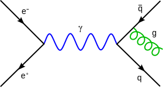
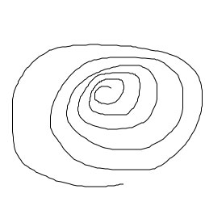
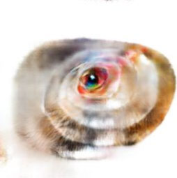
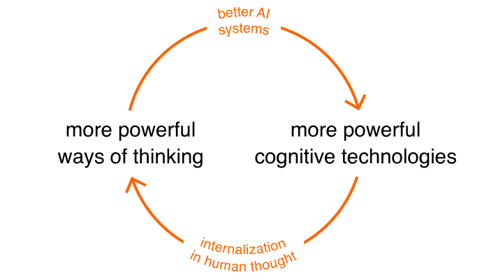

What are computers for?
Historically, different answers to this question – that is,
different visions of computing – have helped inspire and
determine the computing systems humanity has ultimately
built. Consider the early electronic computers. ENIAC, the
world's first general-purpose electronic computer, was
commissioned to compute artillery firing tables for the United
States Army. Other early computers were also used to solve
numerical problems, such as simulating nuclear explosions,
predicting the weather, and planning the motion of rockets. The
machines operated in a batch mode, using crude input and output
devices, and without any real-time interaction. It was a vision
of computers as number-crunching machines, used to speed up
calculations that would formerly have taken weeks, months, or more
for a team of humans.
In the 1950s a different vision of what computers are for began to
develop. That vision was crystallized in 1962, when Douglas
Engelbart proposed that computers could be used as a way
of augmenting human
intellect. In this view, computers weren't primarily
tools for solving number-crunching problems. Rather, they were
real-time interactive systems, with rich inputs and outputs, that
humans could work with to support and expand their own
problem-solving process. This vision of intelligence augmentation
(IA) deeply influenced many others, including researchers such as
Alan Kay at Xerox PARC, entrepreneurs such as Steve Jobs at Apple,
and led to many of the key ideas of modern computing systems. Its
ideas have also deeply influenced digital art and music, and
fields such as interaction design, data visualization,
computational creativity, and human-computer interaction.
Research on IA has often been in competition with research on
artificial intelligence (AI): competition for funding, competition
for the interest of talented researchers. Although there has
always been overlap between the fields, IA has typically focused
on building systems which put humans and machines to work
together, while AI has focused on complete outsourcing of
intellectual tasks to machines. In particular, problems in AI are
often framed in terms of matching or surpassing human performance:
beating humans at chess or Go; learning to recognize speech and
images or translating language as well as humans; and so on.
This essay describes a new field, emerging today out of a
synthesis of AI and IA. For this field, we suggest the
name artificial intelligence augmentation (AIA): the use
of AI systems to help develop new methods for intelligence
augmentation. This new field introduces important new fundamental
questions, questions not associated to either parent field. We
believe the principles and systems of AIA will be radically
different to most existing systems.
Our essay begins with a survey of recent technical work hinting at
artificial intelligence augmentation, including work
on generative interfaces – that is, interfaces
which can be used to explore and visualize generative machine
learning models. Such interfaces develop a kind of cartography of
generative models, ways for humans to explore and make meaning
from those models, and to incorporate what those models
“know” into their creative work.
Our essay is not just a survey of technical work. We believe now
is a good time to identify some of the broad, fundamental
questions at the foundation of this emerging field. To what
extent are these new tools enabling creativity? Can they be used
to generate ideas which are truly surprising and new, or are the
ideas cliches, based on trivial recombinations of existing ideas?
Can such systems be used to develop fundamental new interface
primitives? How will those new primitives change and expand the
way humans think?
Using generative models to invent meaningful creative operations
Let's look at an example where a machine learning model makes a
new type of interface possible. To understand the interface,
imagine you're a type designer, working on creating a new
fontWe shall egregiously abuse the distinction between
a font and a typeface. Apologies to any type designers who may be
reading.. After sketching some initial designs, you
wish to experiment with bold, italic, and condensed variations.
Let's examine a tool to generate and explore such variations, from
any initial design. For reasons that will soon be explained the
quality of results is quite crude; please bear with us.
Of course, varying the bolding (i.e., the weight), italicization
and width are just three ways you can vary a font. Imagine that
instead of building specialized tools, users could build their own
tool merely by choosing examples of existing fonts. For instance,
suppose you wanted to vary the degree of serifing on a font. In
the following, please select 5 to 10 sans-serif fonts from the top
box, and drag them to the box on the left. Select 5 to 10 serif
fonts and drag them to the box on the right. As you do this, a
machine learning model running in your browser will automatically
infer from these examples how to interpolate your starting font in
either the serif or sans-serif direction:
In fact, we used this same technique to build the earlier bolding
italicization, and condensing tool. To do so, we used the
following examples of bold and non-bold fonts, of italic and
non-italic fonts, and of condensed and non-condensed fonts:
To build these tools, we used what's called a generative
model; the particular model we use was trained
by James Wexler. To
understand generative models, consider that a priori
describing a font appears to require a lot of data. For
instance, if the font is $64$ by $64$ pixels, then we'd expect
to need $64 \times 64 = 4,096$ parameters to describe a single
glyph. But we can use a generative model to find a much simpler
description.
We do this by building a neural network which takes a small number
of input variables, called latent variables, and produces
as output the entire glyph. For the particular model we use, we
have $40$ latent space dimensions, and map that into the
$4,096$-dimensional space describing all the pixels in the glyph.
In other words, the idea is to map a low-dimensional space into a
higher-dimensional space:
The generative model we use is a type of neural network known as
a variational autoencoder
(VAE). For our purposes, the details of the generative
model aren't so important. The important thing is that by
changing the latent variables used as input, it's possible to get
different fonts as output. So one choice of latent variables will
give one font, while another choice will give a different font:
You can think of the latent variables as a compact, high-level
representation of the font. The neural network takes that
high-level representation and converts it into the full pixel
data. It's remarkable that just $40$ numbers can capture the
apparent complexity in a glyph, which originally required $4,096$
variables.
The generative model we use is learnt from a training set of more
than $50$ thousand
fonts Bernhardsson
scraped from the open web. During training, the weights and
biases in the network are adjusted so that the network can output
a close approximation to any desired font from the training set,
provided a suitable choice of latent variables is made. In some
sense, the model is learning a highly compressed representation of
all the training fonts.
In fact, the model doesn't just reproduce the training fonts. It
can also generalize, producing fonts not seen in training. By
being forced to find a compact description of the training
examples, the neural net learns an abstract, higher-level model of
what a font is. That higher-level model makes it possible to
generalize beyond the training examples already seen, to produce
realistic-looking fonts.
Ideally, a good generative model would be exposed to a relatively
small number of training examples, and use that exposure to
generalize to the space of all possible human-readable fonts.
That is, for any conceivable font – whether existing or
perhaps even imagined in the future – it would be possible
to find latent variables corresponding exactly to that font. Of
course, the model we're using falls far short of this ideal
– a particularly egregious failure is that many fonts
generated by the model omit the tail on the capital
“Q” (you can see this in the examples above). Still,
it's useful to keep in mind what an ideal generative model would
do.
Such generative models are similar in some ways to how scientific
theories work. Scientific theories often greatly simplify the
description of what appear to be complex phenomena, reducing large
numbers of variables to just a few variables from which many
aspects of system behavior can be deduced. Furthermore, good
scientific theories sometimes enable us to generalize to discover
new phenomena.
As an example, consider ordinary material objects. Such objects
have what physicists call a phase – they may be a
liquid, a solid, a gas, or perhaps something more exotic, like a
superconductor
or Bose-Einstein
condensate. A priori, such systems seem immensely
complex, involving perhaps $10^{23}$ or so molecules. But the
laws of thermodynamics and statistical mechanics enable us to find
a simpler description, reducing that complexity to just a few
variables (temperature, pressure, and so on), which encompass much
of the behavior of the system. Furthermore, sometimes it's
possible to generalize, predicting unexpected new phases of
matter. For example, in 1924, physicists used thermodynamics and
statistical mechanics to predict a remarkable new phase of matter,
Bose-Einstein condensation, in which a collection of atoms may all
occupy identical quantum states, leading to surprising large-scale
quantum interference effects. We'll come back to this predictive
ability in our later discussion of creativity and generative
models.
Returning to the nuts and bolts of generative models, how can we
use such models to do example-based reasoning like that in the
tool shown above? Let's consider the case of the bolding tool. In
that instance, we take the average of all the latent vectors for
the user-specified bold fonts, and the average for all the
user-specified non-bold fonts. We then compute the difference
between these two average vectors:
We'll refer to this as the bolding vector. To make some
given font bolder, we simply add a little of the bolding vector to
the corresponding latent vector, with the amount of bolding vector
added controlling the boldness of the resultIn
practice, sometimes a slightly different procedure is used. In
some generative models the latent vectors satisfy some constraints
– for instance, they may all be of the same length. When
that's the case, as in our model, a more sophisticated
“adding” operation must be used, to ensure the length
remains the same. But conceptually, the picture of adding the
bolding vector is the right way to think.:
This technique was introduced
by Larsen et al, and
vectors like the bolding vector are sometimes called
attribute vectors. The same idea is use to implement all
the tools we've shown. That is, we use example fonts to creating
a bolding vector, an italicizing vector, a condensing vector, and
a user-defined serif vector. The interface thus provides a way of
exploring the latent space in those four directions.
The tools we've shown have many drawbacks. Consider the following
example, where we start with an example glyph, in the middle, and
either increase or decrease the bolding (on the right and left,
respectively):
Examining the glyphs on the left and right we see many unfortunate
artifacts. Particularly for the rightmost glyph, the edges start to get
rough, and the serifs begin to disappear. A better generative
model would reduce those artifacts. That's a good long-term
research program, posing many intriguing problems. But even with
the model we have, there are also some striking benefits to the
use of the generative model.
To understand these benefits, consider a naive approach to
bolding, in which we simply add some extra pixels around a glyph's
edges, thickening it up. While this thickening perhaps matches a
non-expert's way of thinking about type design, an expert does
something much more involved. In the following we show the
results of this naive thickening procedure versus what is actually
done, for Georgia and Helvetica:
As you can see, the naive bolding procedure produces quite
different results, in both cases. For example, in Georgia, the
left stroke is only changed slightly by bolding, while the right
stroke is greatly enlarged, but only on one side. In both
fonts, bolding doesn't change the height of the font, while the
naive approach does.
As these examples show, good bolding is not a trivial
process of thickening up a font. Expert type designers have many
heuristics for bolding, heuristics inferred from much previous
experimentation, and careful study of historical
examples. Capturing all those heuristics in a conventional program
would involve immense work. The benefit of using the generative
model is that it automatically learns many such heuristics.
For example, a naive bolding tool would rapidly fill in the
enclosed negative space in the enclosed upper region of the letter
“A”. The font tool doesn't do this. Instead, it goes
to some trouble to preserve the enclosed negative space, moving
the A's bar down, and filling out the interior strokes more slowly
than the exterior. This principle is evident in the examples
shown above, especially Helvetica, and it can also be seen in the
operation of the font tool:
The heuristic of preserving enclosed negative space is not a
priori obvious. However, it's done in many professionally
designed fonts. If you examine examples like those shown above
it's easy to see why: it improves legibility. During training,
our generative model has automatically inferred this principle
from the examples it's seen. And our bolding interface then makes
this available to the user.
In fact, the model captures many other heuristics. For instance,
in the above examples the heights of the fonts are (roughly)
preserved, which is the norm in professional font design. Again,
what's going on isn't just a thickening of the font, but rather
the application of a more subtle heuristic inferred by the
generative model. Such heuristics can be used to create fonts
with properties which would otherwise be unlikely to occur to
users. Thus, the tool expands ordinary people's ability to
explore the space of meaningful fonts.
The font tool is an example of a kind of cognitive technology. In
particular, the primitive operations it contains can be
internalized as part of how a user thinks. In this it resembles a
program such as Photoshop or a spreadsheet or 3D graphics
programs. Each provides a novel set of interface primitives,
primitives which can be internalized by the user as fundamental
new elements in their thinking. This act of internalization of new
primitives is fundamental to much work on intelligence
augmentation.
The ideas shown in the font tool can be extended to other domains.
Using the same interface, we can use a generative model to
manipulate images of human faces using qualities such as
expression, gender, or hair color. Or to manipulate sentences
using length, sarcasm, or tone. Or to manipulate molecules using
chemical properties:
Such generative interfaces provide a kind of cartography of
generative models, ways for humans to explore and make meaning
using those models.
We saw earlier that the font model automatically infers relatively
deep principles about font design, and makes them available to
users. While it's great that such deep principles can be
inferred, sometimes such models infer other things that are wrong,
or undesirable. For example, White
points out the addition of a smile vector in some face
models will make faces not just smile more, but also appear more
feminine. Why? Because in the training data more women than men
were smiling. So these models may not just learn deep facts about
the world, they may also internalize prejudices or erroneous
beliefs. Once such a bias is known, it is often possible to make
corrections. But to find those biases requires careful auditing
of the models, and it is not yet clear how we can ensure such
audits are exhaustive.
More broadly, we can ask why attribute vectors work, when they
work, and when they fail? At the moment, the answers to these
questions are poorly understood.
For the attribute vector to work that requires taking any starting
font, we can construct the corresponding bold version by adding
the same vector in the latent space. However, a
priori there is no reason using a single constant vector to
displace will work. It may be that we should displace in many
different ways. For instance, the heuristics used to bold serif
and sans-serif fonts are quite different, and so it seems likely
that very different displacements would be involved:
Of course, we could do something more sophisticated than using a
single constant attribute vector. Given pairs of example fonts
(unbold, bold) we could train a machine learning algorithm to take
as input the latent vector for the unbolded version and output the
latent vector for the bolded version. With additional training
data about font weights, the machine learning algorithm could
learn to generate fonts of arbitrary weight. Attribute vectors
are just an extremely simple approach to doing these kinds of
operation.
For these reasons, it seems unlikely that attribute vectors will
last as an approach to manipulating high-level features. Over the
next few years much better approaches will be developed. However,
we can still expect interfaces offering operations broadly similar
to those sketched above, allowing access to high-level and
potentially user-defined concepts. That interface pattern doesn't
depend on the technical details of attribute vectors.
Interactive Generative Adversarial Models
Let's look at another example using machine learning models to
augment human creativity. It's the interactive generative
adversarial networks, or iGANs, introduced
by Zhu et al in 2016.
One of the examples of Zhu et al is the use of iGANs in
an interface to generate images of consumer products such as
shoes. Conventionally, such an interface would require the
programmer to write a program containing a great deal of knowledge
about shoes: soles, laces, heels, and so on. Instead of doing
this, Zhu et al train a generative model using $50$
thousand images of shoes, downloaded from Zappos. They then use
that generative model to build an interface that lets a user
roughly sketch the shape of a shoe, the sole, the laces, and so
on:
Excerpted from Zhu et
al.
The visual quality is low, in part because the generative model
Zhu et al used is outdated by modern (2017) standards
– with more modern models, the visual quality would be much
higher.
But the visual quality is not the point. Many interesting things
are going on in this prototype. For instance, notice how the
overall shape of the shoe changes considerably when the sole is
filled in – it becomes narrower and sleeker. Many small
details are filled in, like the black piping on the top of the
white sole, and the red coloring filled in everywhere on the
shoe's upper. These and other facts are automatically deduced
from the underlying generative model, in a way we'll describe
shortly.
The same interface may be used to sketch landscapes. The only
difference is that the underlying generative model has been
trained on landscape images rather than images of shoes. In this
case it becomes possible to sketch in just the colors associated
to a landscape. For example, here's a user sketching in some green
grass, the outline of a mountain, some blue sky, and snow on the
mountain:
Excerpted from Zhu et
al.
The generative models used in these interfaces are different than
for our font model. Rather than using variational autoencoders,
they're based on generative
adversarial networks (GANs). But the underlying idea is
still to find a low-dimensional latent space which can be used to
represent (say) all landscape images, and map that latent space to
a corresponding image. Again, we can think of points in the
latent space as a compact way of describing landscape images.
Roughly speaking, the way the iGANs works is as follows. Whatever
the current image is, it corresponds to some point in the latent
space:
Suppose, as happened in the earlier video, the user now sketches
in a stroke outlining the mountain shape. We can think of the
stroke as a constraint on the image, picking out a subspace of the
latent space, consisting of all points in the latent space whose
image matches that outline:
The way the interface works is to find a point in the latent space
which is near to the current image, so the image is not changed
too much, but also coming close to satisfying the imposed
constraints. This is done by optimizing an objective function
which combines the distance to each of the imposed constraints, as
well as the distance moved from the current point. If there's
just a single constraint, say, corresponding to the mountain
stroke, this looks something like the following:
We can think of this, then, as a way of applying constraints to
the latent space to move the image around in meaningful ways.
The iGANs have much in common with the font tool we showed
earlier. Both make available operations that encode much subtle
knowledge about the world, whether it be learning to understand
what a mountain looks like, or inferring that enclosed negative
space should be preserved when bolding a font. Both the iGANs and
the font tool provide ways of understanding and navigating a
high-dimensional space, keeping us on the natural space of fonts
or shoes or landscapes. As Zhu et al remark:
[F]or most of us, even a simple image manipulation in Photoshop
presents insurmountable difficulties… any less-than-perfect
edit immediately makes the image look completely unrealistic. To
put another way, classic visual manipulation paradigm does not
prevent the user from “falling off” the manifold of
natural images.
Like the font tool, the iGANs is a cognitive technology. Users
can internalize the interface operations as new primitive elements
in their thinking. In the case of shoes, for example, they can
learn to think in terms of the difference they want to apply,
adding a heel, or a higher top, or a special highlight. This is
richer than the traditional way non-experts think about shoes
(“Size 11, black” etc). To the extent that
non-experts do think in more sophisticated ways –
“make the top a little higher and sleeker” –
they get little practice in thinking this way, or seeing the
consequences of their choices. Having an interface like this
enables easier exploration, the ability to develop idioms and the
ability to plan, to swap ideas with friends, and so on.
Two models of computation
Let's revisit the question we began the essay with, the question
of what computers are for, and how this relates to intelligence
augmentation.
One common conception of computers is that they're problem-solving
machines: “computer, what is the result of firing this
artillery shell in such-and-such a wind [and so on]?”;
“computer, what will the maximum temperature in Tokyo be in
5 days?”; “computer, what is the best move to take
when the Go board is in this position?”; “computer,
how should this image be classified?”; and so on.
This is a conception common to both the early view of computers as
number-crunchers, and also in much work on AI, both historically
and today. It's a model of a computer as a way of outsourcing
cognition. In speculative depictions of possible future AI,
this cognitive outsourcing model often shows up in the
view of an AI as an oracle, able to solve some large class of
problems with better-than-human performance.
But a very different conception of what computers are for is
possible, a conception much more congruent with work on
intelligence augmentation.
To understand this alternate view, consider our subjective
experience of thought. For many people, that experience is verbal:
they think using language, forming chains of words in their heads,
similar to sentences in speech or written on a page. For other
people, thinking is a more visual experience, incorporating
representations such as graphs and maps. Still other people mix
mathematics into their thinking, using algebraic expressions or
diagrammatic techniques, such as Feynman diagrams and Penrose
diagrams.
In each case, we're thinking using representations invented by
other people: words, graphs, maps, algebra, mathematical diagrams,
and so on. We internalize these cognitive technologies as we grow
up, and come to use them as a kind of substrate for our thinking.
For most of history, the range of available cognitive technologies
has changed slowly and incrementally. A new word will be
introduced, or a new mathematical symbol. More rarely, a radical
new cognitive technology will be developed. For example, in 1637
Descartes published his “Discourse on Method”,
explaining how to represent geometric ideas using algebra, and
vice versa:
This enabled a radical change and expansion in how we think about
both geometry and algebra.
Historically, lasting cognitive technologies have been invented
only rarely. But modern computers are a meta-medium enabling the
rapid invention of many new cognitive technologies. Consider a
relatively banal example, such
as Photoshop. Adept Photoshop users routinely
have formerly impossible thoughts such as: “let's apply the
clone stamp to the such-and-such layer.”. That's an
instance of a more general class of thought: “computer, [new
type of action] this [new type of representation for a newly
imagined class of object]”. When that happens, we're using
computers to expand the range of thoughts we can think.
It's this kind of cognitive transformation model which
underlies much of the deepest work on intelligence augmentation.
Rather than outsourcing cognition, it's about changing the
operations and representations we use to think; it's about
changing the substrate of thought itself. And so while cognitive
outsourcing is important, this cognitive transformation view
offers a much more profound model of intelligence augmentation.
It's a view in which computers are a means to change and expand
human thought itself.
Historically, cognitive technologies were developed by human
inventors, ranging from the invention of writing in Sumeria and
Mesoamerica, to the modern interfaces of designers such as Douglas
Engelbart, Alan Kay, and others.
Examples such as those described in this essay suggest that AI
systems can enable the creation of new cognitive technologies.
Things like the font tool aren't just oracles to be consulted when
you want a new font. Rather, they can be used to explore and
discover, to provide new representations and operations, which can
be internalized as part of the user's own thinking. And while
these examples are in their early stages, they suggest AI is not
just about cognitive outsourcing. A different view of AI is
possible, one where it helps us invent new cognitive technologies
which transform the way we think.
In this essay we've focused on a small number of examples, mostly
involving exploration of the latent space. There are many other
examples of artificial intelligence augmentation. To give some
flavor, without being comprehensive:
the sketch-rnn system, for neural
network assisted drawing;
the Wekinator, which enables
users to rapidly build new musical instruments and artistic
systems; TopoSketch, for developing
animations by exploring latent spaces; machine learning models for
designing overall typographic
layout; and a generative model which enables
interpolation between musical
phrases. In each case, the systems use machine learning
to enable new primitives which can be integrated into the user's
thinking. More broadly, artificial intelligence augmentation will
draw on fields such as computational
creativity and interactive machine
learning.
Finding powerful new primitives of thought
We've argued that machine learning systems can help create
representations and operations which serve as new primitives in
human thought. What properties should we look for in such new
primitives? This is too large a question to be answered
comprehensively in a short essay. But we will explore it briefly.
Historically, important new media forms often seem strange when
introduced. Many such stories have passed into popular culture:
the near riot at the premiere of Stravinsky and Nijinksy's
“Rite of Spring”; the consternation caused by the
early cubist paintings, leading
The New York Times to
comment: “What do they mean? Have those
responsible for them taken leave of their senses? Is it art or
madness? Who knows?”
Another example comes from physics. In the 1940s, different
formulations of the theory of quantum electrodynamics were
developed independently by the physicists Julian Schwinger,
Shin'ichirō Tomonaga, and Richard Feynman. In their work,
Schwinger and Tomonaga used a conventional algebraic approach,
along lines similar to the rest of physics. Feynman used a more
radical approach, based on what are now known as Feynman diagrams,
for depicting the interaction of light and matter:

Image by Joel
Holdsworth), licensed under a Creative Commons
Attribution-Share Alike 3.0 Unported license
Initially, the Schwinger-Tomonaga approach was easier for other
physicists to understand. When Feynman and Schwinger presented
their work at a 1948 workshop, Schwinger was immediately
acclaimed. By contrast, Feynman left his audience mystified. As
James Gleick put it in his biography of
Feynman:
It struck Feynman that everyone had a favorite principle or
theorem and he was violating them all… Feynman knew he had
failed. At the time, he was in anguish. Later he said simply:
“I had too much stuff. My machines came from too far
away.”
Of course, strangeness for strangeness's sake alone is not
useful. But these examples suggest that breakthroughs in
representation often appear strange at first. Is there any
underlying reason that is true?
Part of the reason is because if some representation is truly new,
then it will appear different than anything you've ever seen
before. Feynman's diagrams, Picasso's paintings, Stravinsky's
music: all revealed genuinely new ways of making meaning. Good
representations sharpen up such insights, eliding the familiar to
show that which is new as vividly as possible. But because of
that emphasis on unfamiliarity, the representation will seem
strange: it shows relationships you've never seen before. In some
sense, the task of the designer is to identify that core
strangeness, and to amplify it as much as possible.
Strange representations are often difficult to understand. At
first, physicists preferred Schwinger-Tomonaga to Feynman. But as
Feynman's approach was slowly understood by physicists, they
realized that although Schwinger-Tomonaga and Feynman were
mathematically equivalent, Feynman was more powerful. As Gleick
puts it:
Schwinger's students at Harvard were put at a competitive
disadvantage, or so it seemed to their fellows elsewhere, who
suspected them of surreptitiously using the diagrams anyway. This
was sometimes true… Murray Gell-Mann later spent a semester
staying in Schwinger's house and loved to say afterward that he
had searched everywhere for the Feynman diagrams. He had not
found any, but one room had been locked…
These ideas are true not just of historical representations, but
also of computer interfaces. However, our advocacy of strangeness
in representation contradicts much conventional wisdom about
interfaces, especially the widely-held belief that they should be
“user friendly”, i.e., simple and immediately useable
by novices. That most often means the interface is cliched, built
from conventional elements combined in standard ways. But while
using a cliched interface may be easy and fun, it's an ease
similar to reading a formulaic romance novel. It means the
interface does not reveal anything truly surprising about its
subject area. And so it will do little to deepen the user's
understanding, or to change the way they think. For mundane tasks
that is fine, but for deeper tasks, and for the longer term, you
want a better interface.
Ideally, an interface will surface the deepest principles
underlying a subject, revealing a new world to the user. When you
learn such an interface, you internalize those principles, giving
you more powerful ways of reasoning about that world. Those
principles are the diffs in your understanding. They're all you
really want to see, everything else is at best support, at worst
unimportant dross. The purpose of the best interfaces isn't to be
user-friendly in some shallow sense. It's to be user-friendly in
a much stronger sense, reifying deep
principles about the world, making them the working
conditions in which users live and create. At that point what once
appeared strange can instead becomes comfortable and familiar,
part of the pattern of thoughtA powerful instance of
these ideas is when an interface reifies general-purpose
principles. An example is an
interface one of us developed
based on the principle of conservation of energy. Such
general-purpose principles generate multiple unexpected
relationships between the entities of a subject, and so are a
particularly rich source of insights when reified in an
interface..
What does this mean for the use of AI models for intelligence
augmentation?
Aspirationally, as we've seen, our machine learning models will
help us build interfaces which reify deep principles in ways
meaningful to the user. For that to happen, the models have to
discover deep principles about the world, recognize those
principles, and then surface them as vividly as possible in an
interface, in a way comprehensible by the user.
Of course, this is a tall order! The examples we've shown are just
barely beginning to do this. It's true that our models do
sometimes discover relatively deep principles, like the
preservation of enclosed negative space when bolding a font. But
this is merely implicit in the model. And while we've built a tool
which takes advantage of such principles, it'd be better if the
model automatically inferred the important principles learned, and
found ways of explicitly surfacing them through the interface.
(Encouraging progress toward this has been made
by InfoGANs, which use
information-theoretic ideas to find structure in the latent
space.) Ideally, such models would start to get at true
explanations, not just in a static form, but in a dynamic form,
manipulable by the user. But we're a long way to that point.
Do these interfaces inhibit creativity?
It's tempting to be skeptical of the expressiveness of the
interfaces we've described. If an interface constrains us to
explore only the natural space of images, does that mean we're
merely doing the expected? Does it mean these interfaces can only
be used to generate visual cliches? Does it prevent us from
generating anything truly new, from doing truly creative work?
To answer these questions, it's helpful to identify two different
modes of creativity. This two-mode model is over-simplified:
creativity doesn't fit so neatly into two distinct categories. Yet
the model nonetheless clarifies the role of new interfaces in
creative work.
The first mode of creativity is the everyday creativity of a
craftsperson engaged in their craft. Much of the work of a font
designer, for example, consists of competent recombination of the
best existing practices. Such work typically involves many
creative choices to meet the intended design goals, but not
developing key new underlying principles.
For such work, the generative interfaces we've been discussing are
promising. While they currently have many limitations, future
research will identity and fix many deficiencies. This is
happening rapidly with GANs: the original
GANs had many limitations,
but models soon appeared that were better adapted to
images, improved the
resolution, reduced artifactsSo much work has been
done on improving resolution and reducing artifacts it seems
unfair to single out any small set of papers, and to omit the many
others., and so on. With enough iterations it's
plausible these generative interfaces will become powerful tools
for craft work.
The second mode of creativity aims toward developing new
principles that fundamentally change the range of creative
expression. One sees this in the work of artists such as Picasso
or Monet, who violated existing principles of painting, developing
new principles which enabled people to see in new ways.
Is it possible to do such creative work, while using a generative
interface? Don't such interfaces constrain us to the space of
natural images, or natural fonts, and thus actively prevent us
from exploring the most interesting new directions in creative
work?
The situation is more complex than this.
In part, this is a question about the power of our generative
models. In some cases, the model can only generate recombinations
of existing ideas. This is a limitation of an ideal GAN, since a
perfectly trained GAN generator will reproduce the training
distribution. Such a model can't directly generate an image based
on new fundamental principles, because such an image wouldn't look
anything like it's seen in its training data.
Artists such as Mario
Klingemann and Mike
Tyka are now using GANs to create interesting
artwork. They're doing that using “imperfect” GAN
models, which they seem to be able to use to explore interesting
new principles; it's perhaps the case that bad GANs may be more
artistically interesting than ideal GANs. Furthermore, nothing
says an interface must only help us explore the latent space.
Perhaps operations can be added which deliberately take us out
of the latent space, or to less probable (and so more
surprising) parts of the space of natural images.
Of course, GANs are not the only generative models. In a
sufficiently powerful generative model, the generalizations
discovered by the model may contain ideas going beyond what humans
have discovered. In that case, exploration of the latent space may
enable us to discover new fundamental principles. The model would
have discovered stronger abstractions than human experts. Imagine
a generative model trained on paintings up until just before the
time of the cubists; might it be that by exploring that model it
would be possible to discover cubism? It would be an analogue to
something like the prediction of Bose-Einstein condensation, as
discussed earlier in the essay. Such invention is beyond today's
generative models, but seems a worthwhile aspiration for future
models.
Our examples so far have all been based on generative models. But
there are some illuminating examples which are not based on
generative models. Consider the pix2pix system developed
by Isola et al. This
system is trained on pairs of images, e.g., pairs showing the
edges of a cat, and the actual corresponding cat. Once trained,
it can be shown a set of edges and asked to generate an image for
an actual corresponding cat. It often does this quite well:
When supplied with unusual constraints, pix2pix can produce
striking images:


Spiral cat
This is perhaps not high creativity of a Picasso-esque level. But
it is still surprising. It's certainly unlike images most of us
have ever seen before. How does pix2pix and its human user achieve
this kind of result?
Unlike our earlier examples, pix2pix is not a generative model.
This means it does not have a latent space or a corresponding
space of natural images. Instead, there is a neural network,
called, confusingly, a generator – this is not meant in the
same sense as our earlier generative models – that takes as
input the constraint image, and produces as output the filled-in
image.
The generator is trained adversarially against a discriminator
network, whose job is to distinguish between pairs of images
generated from real data, and pairs of images generated by the
generator.
While this sounds similar to a conventional GAN, there is a
crucial difference: there is no latent vector input to the
generatorActually, Isola et
al experimented with adding such a latent vector to
the generator, but found it made little difference to the
resulting images.. Rather, there is simply an input
constraint. When a human inputs a constraint unlike anything seen
in training, the network is forced to improvise, doing the best it
can to interpret that constraint according to the rules it has
previously learned. The creativity is the result of a forced
merger of knowledge inferred from the training data, together with
novel constraints provided by the user. As a result, even
relatively simple ideas – like the bread- and beholder-cats
– can result in striking new types of images, images not
within what we would previously have considered the space of
natural images.
Conclusion
It is conventional wisdom that AI will change how we interact with
computers. Unfortunately, many in the AI community greatly
underestimate the depth of interface design, often regarding it as
a simple problem, mostly about making things pretty or
easy-to-use. In this view, interface design is a problem to be
handed off to others, while the hard work is to train some machine
learning system.
This view is incorrect. At its deepest, interface design means
developing the fundamental primitives human beings think and
create with. This is a problem whose intellectual genesis goes
back to the inventors of the alphabet, of cartography, and of
musical notation, as well as modern giants such as Descartes,
Playfair, Feynman, Engelbart, and Kay. It is one of the hardest,
most important and most fundamental problems humanity grapples
with.
As discussed earlier, in one common view of AI our computers will
continue to get better at solving problems, but human beings will
remain largely unchanged. In a second common view, human beings
will be modified at the hardware level, perhaps directly through
neural interfaces, or indirectly through whole brain emulation.
We've described a third view, in which AIs actually change
humanity, helping us invent new cognitive technologies, which
expand the range of human thought. Perhaps one day those
cognitive technologies will, in turn, speed up the development of
AI, in a virtuous feedback cycle:

It would not be a Singularity in machines. Rather, it would be a
Singularity in humanity's range of thought. Of course, this loop
is at present extremely speculative. The systems we've described
can help develop more powerful ways of thinking, but there's at
most an indirect sense in which those ways of thinking are being
used in turn to develop new AI systems.
Of course, over the long run it's possible that machines will
exceed humans on all or most cognitive tasks. Even if that's the
case, cognitive transformation will still be a valuable end, worth
pursuing in its own right. There is pleasure and value involved
in learning to play chess or Go well, even if machines do it
better. And in activities such as story-telling the benefit often
isn't so much the artifact produced as the process of construction
itself, and the relationships forged. There is intrinsic value in
personal change and growth, apart from instrumental benefits.
The interface-oriented work we've discussed is outside the
narrative used to judge most existing work in artificial
intelligence. It doesn't involve beating some benchmark for a
classification or regression problem. It doesn't involve
impressive feats like beating human champions at games such as
Go. Rather, it involves a much more subjective and
difficult-to-measure criterion: is it helping humans think and
create in new ways?
This creates difficulties for doing this kind of work,
particularly in a research setting. Where should one publish?
What community does one belong to? What standards should be
applied to judge such work? What distinguishes good work from
bad?
We believe that over the next few years a community will emerge
which answers these questions. It will run workshops and
conferences. It will publish work in venues such as Distill. Its
standards will draw from many different communities: from the
artistic and design and musical communities; from the mathematical
community's taste in abstraction and good definition; as well as
from the existing AI and IA communities, including work on
computational creativity and human-computer interaction. The
long-term test of success will be the development of tools which
are widely used by creators. Are artists using these tools to
develop remarkable new styles? Are scientists in other fields
using them to develop understanding in ways not otherwise
possible? These are great aspirations, and require an approach
that builds on conventional AI work, but also incorporates very
different norms.